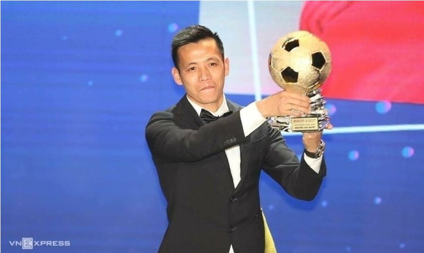

Ngày 9/3, Hội đồng xét chọn giải thưởng Gương mặt trẻ Việt Nam tiêu biểu (Trung ương Đoàn) công bố 10 cá nhân được vinh danh năm 2020.
10 gương mặt trẻ thuộc 9 lĩnh vực gồm: Học tập, Nghiên cứu khoa học - Sáng tạo, Lao động sản xuất, Kinh doanh - Khởi nghiệp, Quốc phòng, An ninh trật tự, Thể dục thể thao, Văn hóa nghệ thuật, Hoạt động xã hội.
Võ Minh Quang, sinh năm 2006, đang học lớp Tài năng Piano - Học viện Âm nhạc Quốc gia Việt Nam, là ứng viên nhỏ tuổi nhất được vinh danh. Là gương mặt trẻ tiêu biểu trong lĩnh vực Văn hóa - Nghệ thuật, Quang từng giành nhiều giải thưởng trong và ngoài nước, gần nhất là giải nhất và đặc biệt bảng 13-17 tuổi cuộc thi Altanta Festival Academy 2020 tại Mỹ. Năm ngoái, em là một trong 10 gương mặt trẻ Việt Nam triển vọng.
Ở lĩnh vực Học tập, Bùi Hồng Đức, sinh năm 2002, học sinh trường THPT chuyên Khoa học Tự nhiên, được vinh danh nhờ hai năm liền giành huy chương vàng Olympic Tin học quốc tế (2019 và 2020) cùng huy chương vàng Olympic Tin học châu Á năm 2020. Em đã được Thủ tướng trao huân chương lao động hạng nhất.
TS Đoàn Lê Hoàng Tân, sinh năm 1987, Phó giám đốc Trung tâm nghiên cứu vật liệu cấu trúc Nano và phân tử, Đại học Quốc gia TP HCM, là gương mặt trẻ tiêu biểu ở lĩnh vực Nghiên cứu khoa học - sáng tạo. Anh có 30 bài báo khoa học công bố trên các tạp chí uy tín quốc tế, là tác giả của một sáng chế ở Mỹ và một sáng chế trong nước. Anh cũng là chủ nhiệm nhiều đề tài nghiên cứu cáp cơ sở, bộ và nhà nước. Năm 2020, anh nhận giải thưởng khoa học công nghệ Quả cầu vàng của Trung ương Đoàn.
Lĩnh vực Lao động sản xuất vinh danh Trần Anh Tú, sinh năm 1989, hiện làm việc ở khoa Kiểm soát bệnh truyền nhiễm, Viện Vệ sinh dịch tễ Trung ương. Năm 2020, anh tham gia vào nhiều hoạt động điều tra, chống Covid-19 ở Sơn Lôi (Bình Xuyên, Vĩnh Phúc), Đà Nẵng hay tham gia truy vết các trường hợp hành khách tiếp xúc gần với ca bệnh trên các chuyến bay quốc tế tại Việt Nam.
Anh Tú nhận được bằng khen của Bộ trưởng Khoa học và Công nghệ nhờ có thành tích xuất sắc trong nghiên cứu, ứng dụng khoa học công nghệ vào phân tích xử lý thông tin dịch tễ, góp phần khoanh vùng dập dịch và bằng khen thầy thuốc trẻ Việt Nam tiêu biểu.
Quả bóng vàng Việt Nam 2020 Nguyễn Văn Quyết được vinh danh ở lĩnh vực Thể dục thể thao. Sinh năm 1991, hiện là đội trưởng Câu lạc bộ bóng đá Hà Nội FC, Nguyễn Văn Quyết cùng đồng đội gặt hái nhiều thành tích trong năm qua như Á quân V-League, Vô địch cúp quốc gia và siêu cúp quốc gia. Anh còn tích cực tham gia các hoạt động thiện nguyện như ủng hộ tiền, nhu yếu phẩm, thiết bị y tế để chống Covid-19.
Cầu thủ Nguyễn Văn Quyết nhận danh hiệu Quả bóng vàng Việt Nam 2020. Ảnh: Đức Đồng.
Thiếu tá Trần Việt Hải, sinh năm 1989, Đại đội trưởng Đại đội 9, Tiểu đoàn 3, Lữ đoàn 201, Binh chủng Tăng thiết giáp, được vinh danh trong lĩnh vực Quốc phòng. Anh là thành viên tham dự Hội thao quân sự quốc tế Army Games trong ba năm liên tiếp (từ 2018) và góp phần mang về nhiều thành tích cho đội tuyển xe tăng Việt Nam như huy chương bạc bảng 2 năm 2019 hay huy chương vàng bảng 2 năm 2020.
Ở lĩnh vực An ninh trật tự, đại úy Nguyễn Trung Đức, sinh năm 1988, Phó trưởng phòng An ninh kinh tế, Công an tỉnh Phú Thọ, là gương mặt trẻ tiêu biểu. Năm 2020, anh cùng tập thể lãnh đạo đơn vị chỉ đạo cán bộ cảnh sát phát hiện, xử lý 14 vụ liên quan đến trật tự quản lý kinh tế, làm rõ dấu hiệu sai phạm với tổng giá trị trên 27,4 tỷ đồng. Trước đó năm 2017, anh than gia điều tra vụ án sử dụng mạng Internet thực hiện hành vi chiếm đoạt tài sản, qua đó triệt phá đường dây tổ chức đánh bạc trực tuyến bằng hình thức game bài Rikvip.
Phạm Ngọc Anh Tùng, sinh năm 1989, làm việc tại Công ty TNHH Công nghệ và Thương mại Ufo (Foodmap Asia) trở thành gương mặt tiêu biểu lĩnh vực Kinh doanh - Khởi nghiệp năm 2020 nhờ dự án Foodmap. Đây là sàn thương mại điện tử nông sản kết nối nông dân với nhà sản xuất vừa và nhỏ đến trực tiếp người tiêu dùng. Hệ thống Foodmap hiện phục vụ hơn 20.000 khách hàng, hỗ trợ và số hóa cho hơn 300 nhà sản xuất với hơn 2.000 sản phẩm đang được bán. Foodmap là đại diện Việt Nam tại vòng chung kết Blue Venture Award thế giới 2021.
Ở lĩnh vực Hoạt động xã hội, hai cá nhân được vinh danh là Hoàng Tuấn Anh và Hà Ánh Phượng. Anh Tuấn Anh, sinh năm 1985, Giám đốc Công ty Cổ phần Vũ Trụ Xanh, nổi tiếng với việc thiết kế cây "ATM gạo", "ATM khẩu trang" trong phòng chống Covid-19. Anh đạt danh hiệu "Công dân trẻ tiêu biểu TP HCM" năm 2020.
Cô Hà Ánh Phượng, sinh năm 1991, giáo viên trường THPT Hương Cần (huyện Thanh Sơn, Phú Thọ) là một trong 10 giáo viên xuất sắc toàn cầu do Quỹ Varkey bầu chọn nhờ những nỗ lực trong việc tổ chức các lớp học xuyên biên giới thông qua việc sử dụng công nghệ thông tin. Cô cũng hướng dẫn học sinh thực hiện nhiều dự án như "Nói không với rác thải nhựa", "Phòng chống bạo lực trên không gian mạng","Dạy tiếng Anh qua phim".
Gương mặt trẻ Việt Nam tiêu biểu là phần thưởng Trung ương Đoàn nhằm tôn vinh những điển hình thanh niên tiêu biểu, dưới 35 tuổi, có thành tích nổi trội ở các lĩnh vực, tạo sự lan tỏa rộng rãi trong cộng đồng.
Năm 2020, Ban tổ chức giải thưởng nhận được 152 hồ sơ hợp lệ từ 44 đơn vị gửi về. Sau nhiều vòng thẩm định, đánh giá và tổ chức bình chọn, 10 cá nhân được vinh danh. Ngoài ra, Ban tổ chức còn trao danh hiệu Gương mặt trẻ Việt Nam triển vọng cho 10 cá nhân còn lại trong top 20.
Lễ tuyên dương 10 Gương mặt trẻ Việt Nam tiêu biểu và triển vọng dự kiến diễn ra ngày 21/3 tại Hà Nội. Theo truyền thống, sau tuyên dương, các cá nhân được vinh danh sẽ về nguồn báo công với Tổ Hùng Vương.